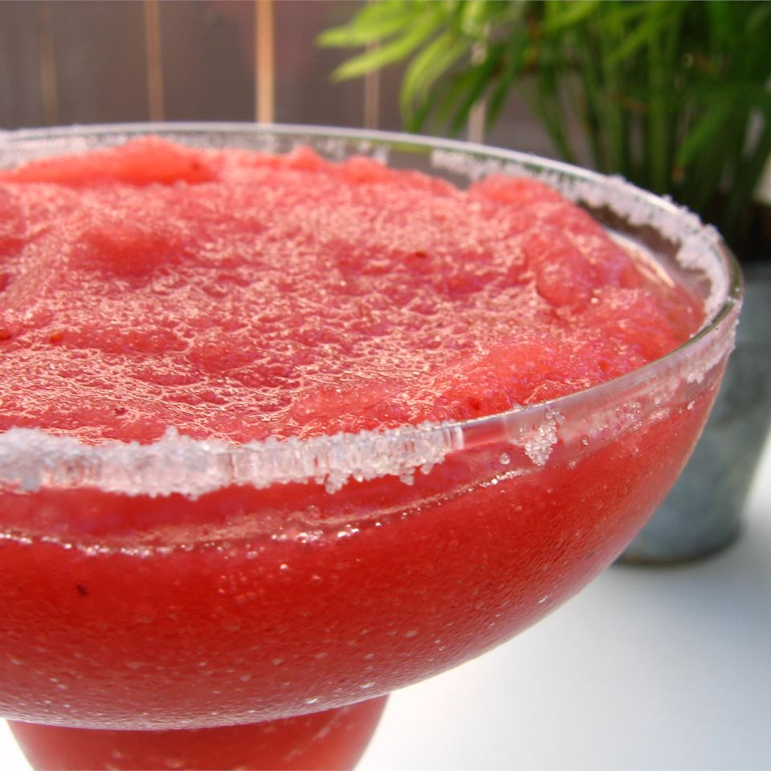

Strawberry margarita

A near perfect strawberry margarita with frozen strawberries and limeade concentrate.
- 6 fluid ounces tequila
- 2 fluid ounces triple sec
- 8 ounces frozen sliced strawberries in syrup
- 4 fluid ounces frozen limeade concentrate
- Fill a blender with ice and crush. Pour in the tequila and triple sec. Add the strawberries and limeade.
- Blend for 30 seconds or until smooth.
- Serve in margarita glasses with the rims dipped in powdered sugar.